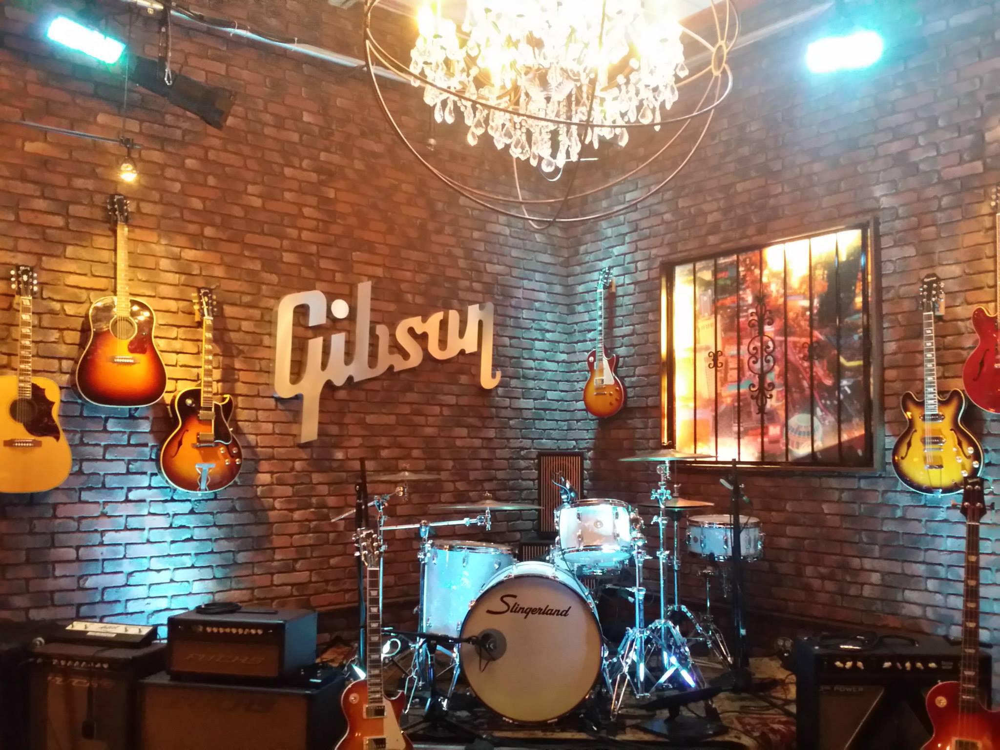

THE GUITAR INITIATIVE
guitars generously donated by
The Guitar Initiative
Bands and celebrities are signing guitars worldwide for the Legacy of Hope campaign. By lending their signatures to these instruments, they are pledging their support of Mr. Mandela's values and commitment for free and accessible healthcare for the children of Africa. They'are also committing the use of their social media in support with messaging, textcode and the connected digital campaigns the support the Legacy of Hope campaign.
Signing of the guitars have included musical artists such as The Crystal Method, members of the Grateful Dead, Steve Jones (Sex Pistols), Guns N Roses, members of Bob Marley's Wailers, Blues Traveler, Allman Brothers, Fishbone, Parliament Funkadellic, Robbie Robertson, Andy Frasier (Free), Nine Inch Nails, The Root, and Depeche Mode.
|
At the end of this campaign, these guitars will go up on the walls of the Neslon Mandela Children's Hospital commemmorating music and art's significant role in building this historical state-of-the-art hospital. There are plans to build a recording facility for the children to learn and run as part of the healing process while producing a live streamed branded feed of top talent shows for global distribution. |
 |
|
"Achieving this through the beauty of music and art is what Legacy of Hope is all about." |

|

|